Stratocaster
| Korpus | Gryf | Podstrunnica | Menzura | Przetworniki | Mostek |
|---|---|---|---|---|---|
| olcha jesion topola lipa |
klon | klon palisander mahoń pao ferro |
25,5 cala | 3x single coil 2x single coil + humbucker 2x humbucker |
Synchronized Tremolo |
Stratocaster zadebiutował w 1954 roku jako następca Telecastera. Od poprzednika różnił się przede wszystkim budową korpusu, który został wyprofilowany według wskazań użytkowników poprzedniej gitary Fendera. W efekcie uzyskano komfortowy i przylegający do ciała kształt, bez ostrych krawędzi, które powodowały dyskomfort przy długim graniu. Korpus wykonany jest najczęściej z lipy lub olchy, jednak najbardziej cenione są modele wykonane z jesionu, ze względu na właściwości brzmieniowe. Podobnie jak w Telecasterze gryf wykonany jest z klonu, a podstrunnica z palisandru, klonu lub bardziej egzotycznych odmian drewna (np. Stevie Ray Vaughn miał podstrunnicę wykonaną z drewna pao ferro). Stratocaster standardowo wyposażony jest 3 przetworniki typu single-coil, 5 pozycyjny przełącznik oraz 3 potencjometry (2 barwy i 1 głośności).
„Strat” jest uważany za najpopularniejszą gitarę na świecie. Jest to najczęściej kopiowany model gitary w historii przemysłu muzycznego. Ceniony jest ze względu na na swój komfort gry, szerokie możliwości brzmieniowe oraz łatwość obsługi. Najbardziej znanym użytkownikiem Stratocastetra był Jimi Hendrix, który swoją grą i brzmieniem przekonał do używania tego modelu gitarzystów bluesowych oraz jazzowych (m.in. Erica Claptona, który wcześniej używał gitar firmy Gibson: Les Paul i SG).
Znani użytkownicy
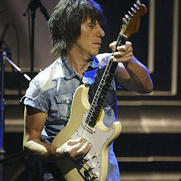
") 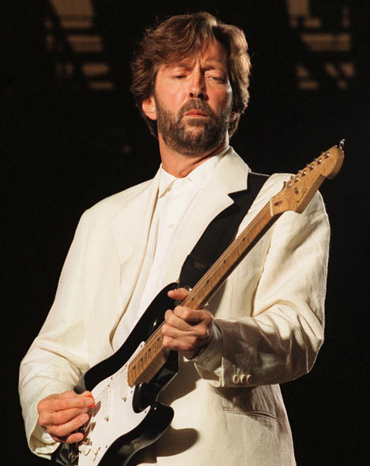
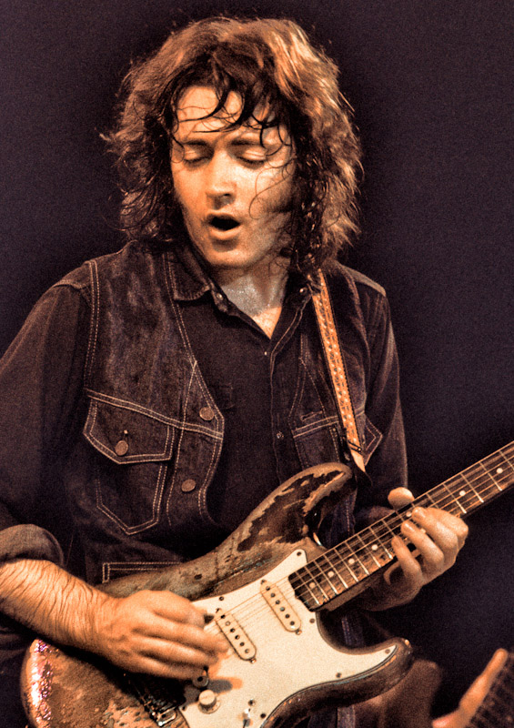
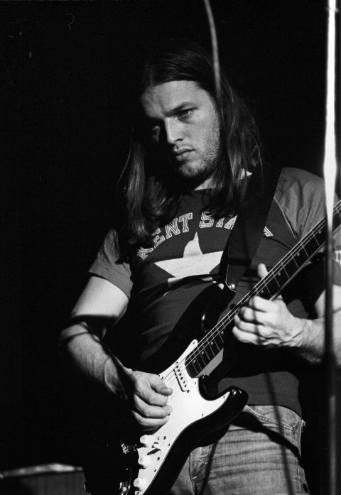
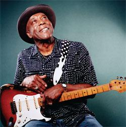
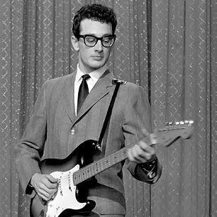
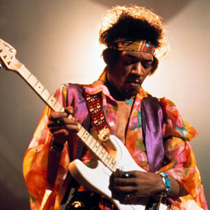
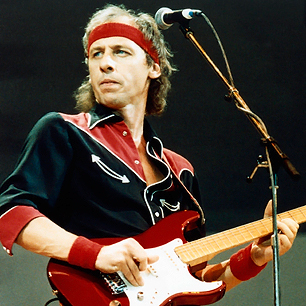
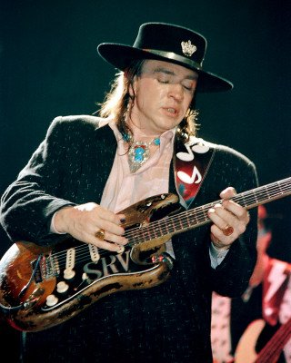
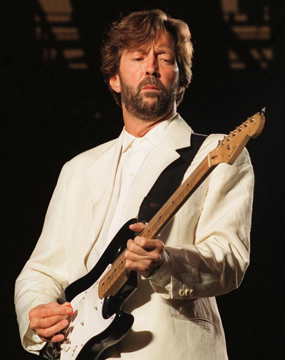
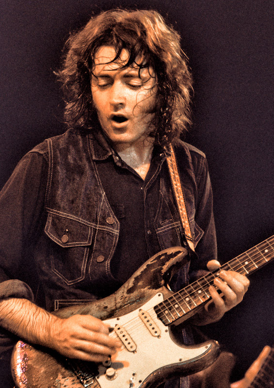
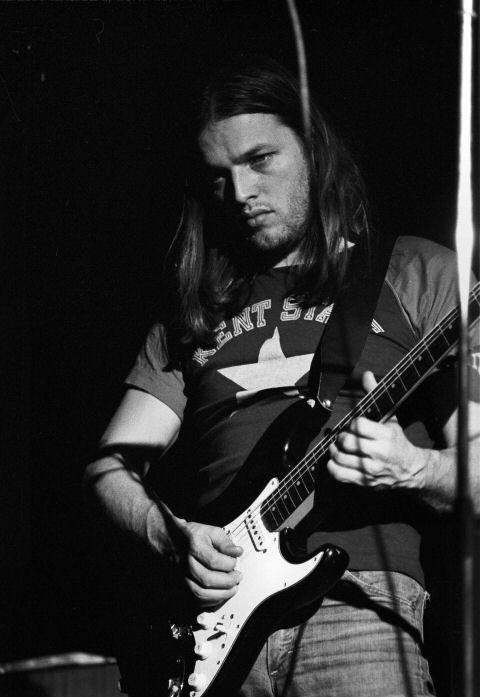
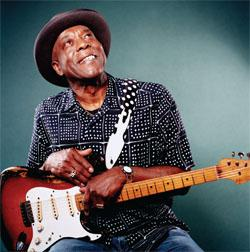
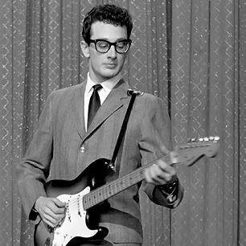
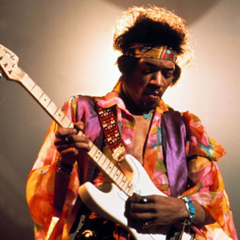
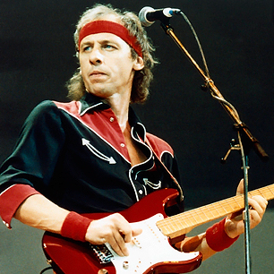
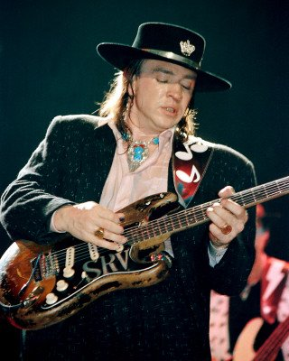
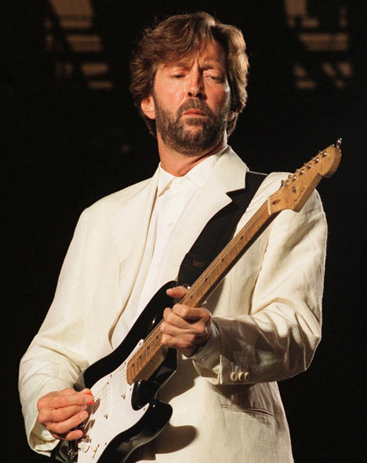
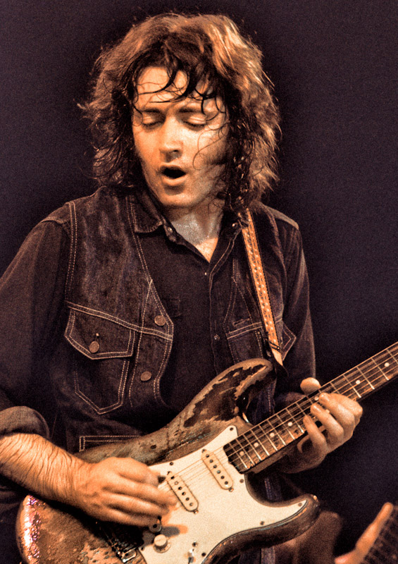
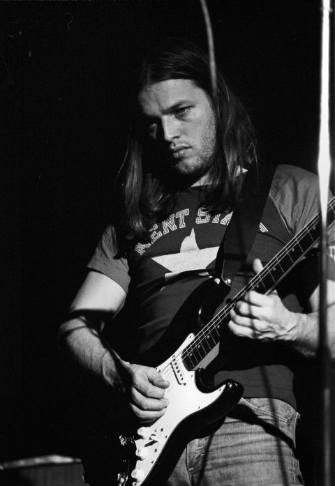
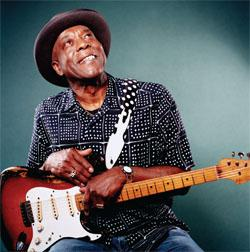
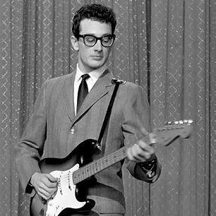
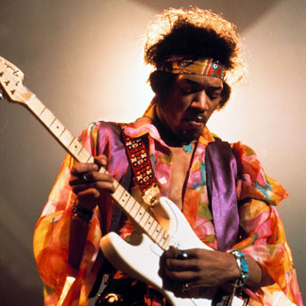
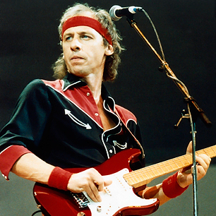
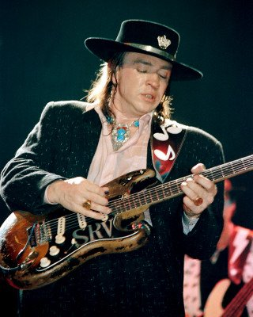
© 2016 Łukasz Karczewski. Wszelkie prawa zastrzeżone.